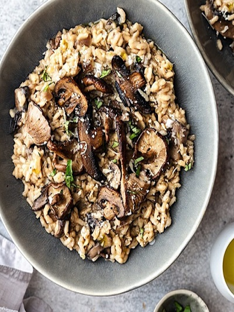

What was previously a bowl of stodgy rice has become a labour of love: elegant grains plump with porcinimushroom stock, white wine and olive oil.

Ingredients
Below is a list of required ingredients:
Mushroom porcini dried 10g
Olive oil 3 tbsp
Shallots 2
Garlic clove 3
Rice arborio 300g
Wine white 3/4 cup
Mushroom chestnut 350g
Sea salt 1 tsp
Pepper black ground 1/4
Parsley 2 tbsp
How to make!
Put the porcini mushrooms into a smallbowl, pour over with 1 cup of boiling water, and set aside.
Heat the oil in a wide, tall-sided frying pan or casserole over a medium heat. Add the shallots and garlic to the pan and saute for 10 minutes. Stir the rice in well and cook gently for 5 minutes.
Strain the soaked porcini into a small pan, storing the soaking liquid from the porcini, and add the strained porcini to the rice mixture.
Pour the wine into the porcini soaking liquid, place over a medium heat and bring to a boil, then turn down to a very low simmer.
Ladle '1 1/4' cups of the hot wine and soaking liquid (porcini) into the rice. Cook, stirring constantly, until the rice has absorbed most of the liquid. Ladle another '1 1/4 cups' of the hot wine and soaking liquid into the rice and keep stirring until it has been absorbed.
Add the chestnut mushrooms to the rice, then ladle in '1 1/4 cups' more ofthe hot wine and soaking liquid, stirring until absorbed, until there's no additional hot wine/soaking liquid left, and the rice is plump and cooked through. This will take about 15 minutes, but do test it (by taking a small amount of rice on a separate spoon) as the rice can vary. Meanwhile, warm four wide serving bowls.
Stir the salt and ground black pepper into the risotto along with most of the parsley. Leave to rest for a couple of minutes. Ladle the risotto into the warm bowls, sprinkle the parsley.
Tip
Ensure that the soaking liquid and hot wine are mixed together, then start to mix noting that any additional mixture may require further salt/pepper due to a dilution of the rice mixture.
When stirring in the liquid to the rice mixture, continue stirring periodically to avoid any rice mixture sticking to the bottom of the pan.